conjurer, w/ Myro Le Ber Assiani, 2022.
FR
conjurer invite à méditer sur la fragilité du présent et les possibilités de vie dans ses ruines. L’installation s’inscrit dans un monde partiellement effondré, composé de systèmes à demi opérants, de ritournelles, de vestiges et de certitudes fossilisées. Elle sonde ce paysage parfois aride, cherchant à le ré-enchanter en suscitant des connexions improbables entre les êtres, les matériaux, les gestes et les idées. Sur la ligne mince entre l’intime et l’extime, elle ébauche un lexique sensible, une carte pour s’orienter dans les ruines.
ENG
conjurer [to conjure] invites to meditate on the fragility of the present and the possibility of life in its ruins. The installation is set in a partially collapsed world composed of half-broken systems, remains, refrains and fossilized certainties. It probes this sometimes arid landscape, seeking reenchantment through improbable connections between beings, materials, gestures and ideas. On the thin line between the intimate and the extimate, it sketches out a sensorial lexicon, a partial cartography of the ruins.
Myro Le Ber Assiani & Antoine Racine, Maison de la Culture Maisonneuve, Montréal, 2022.
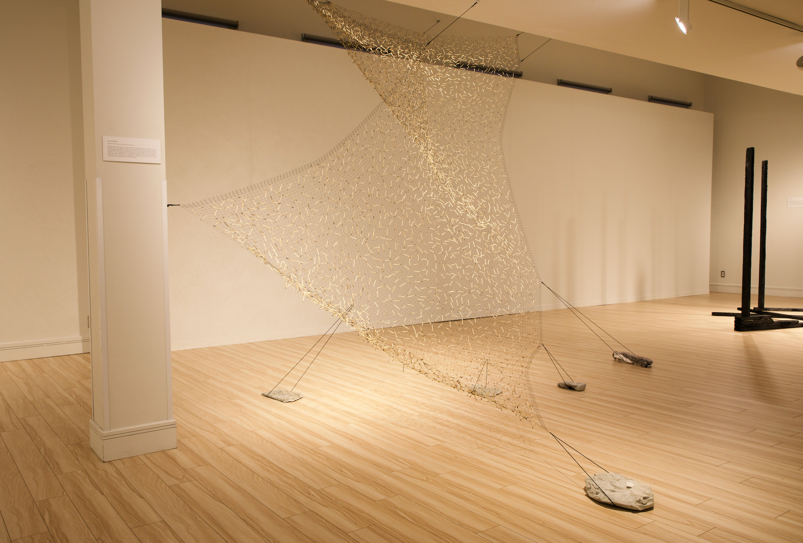
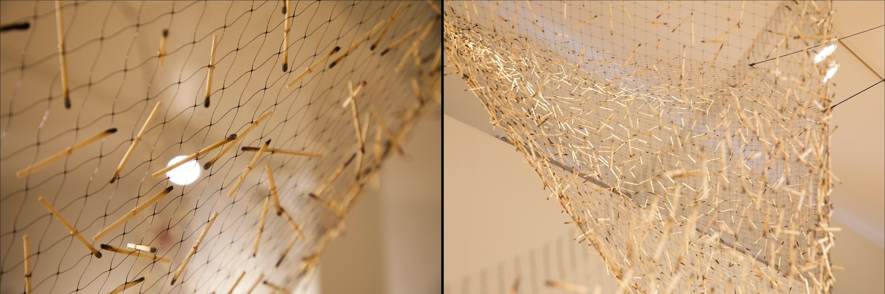
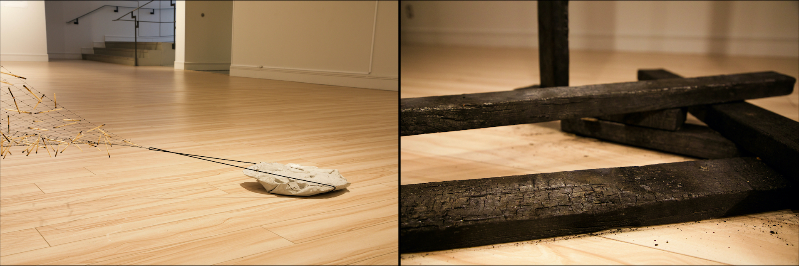
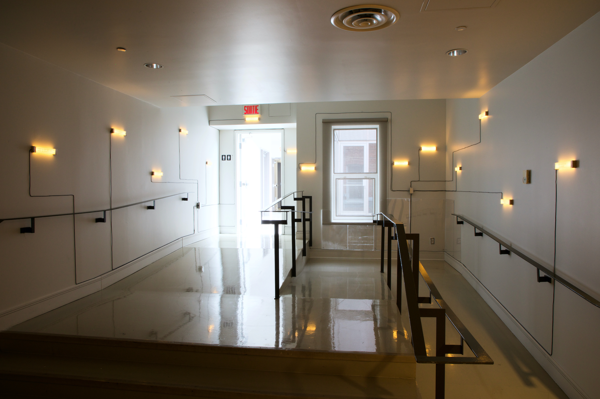
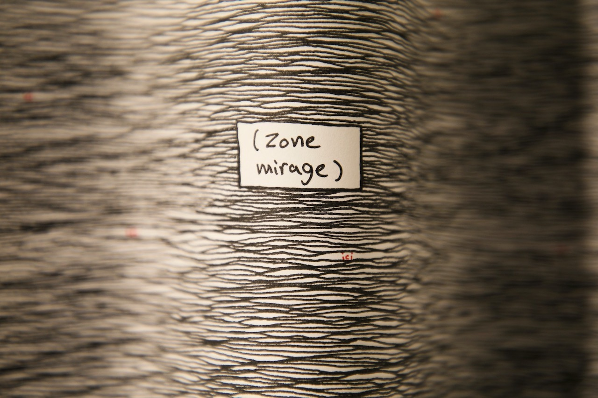
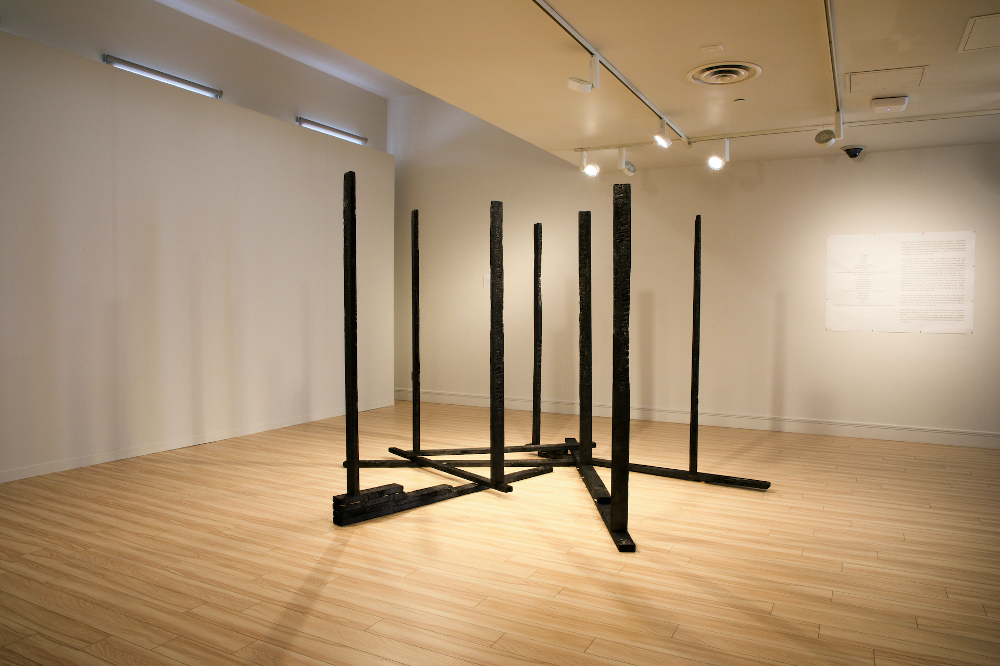
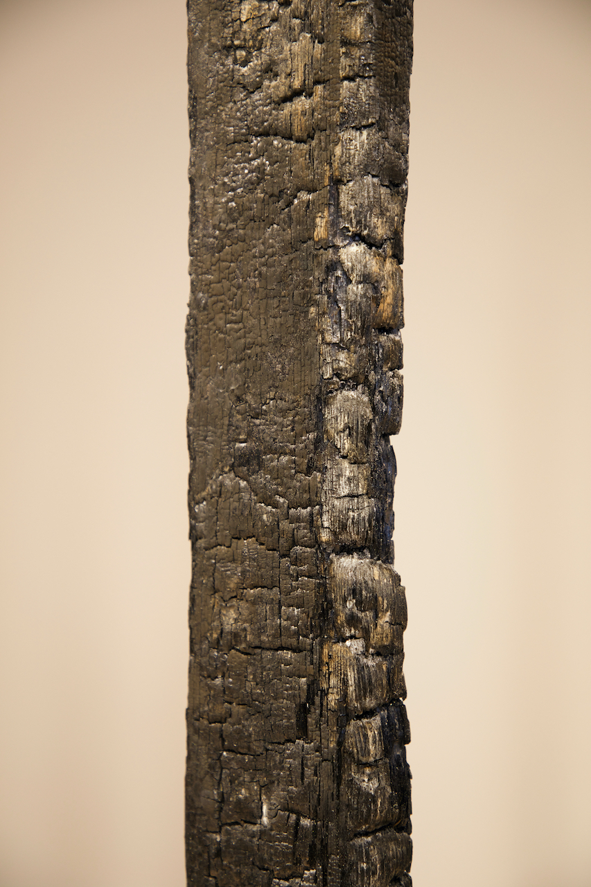
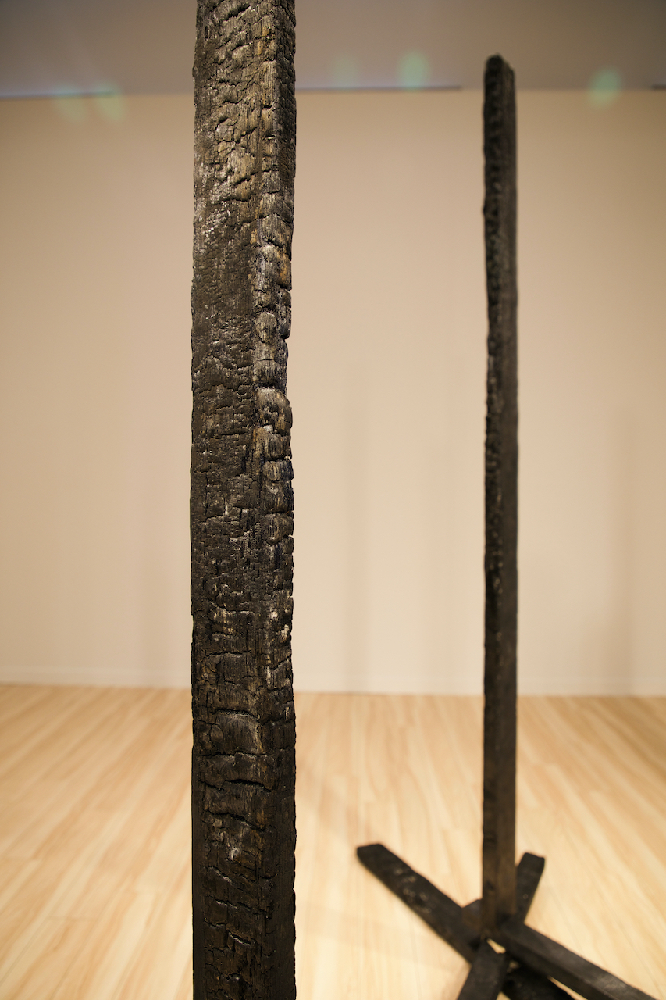
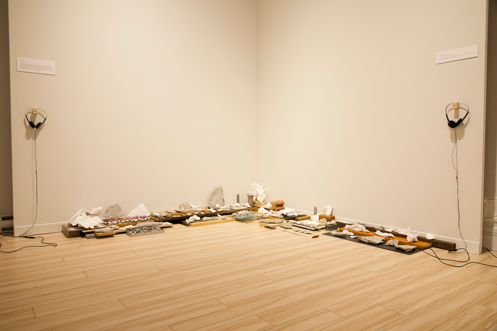
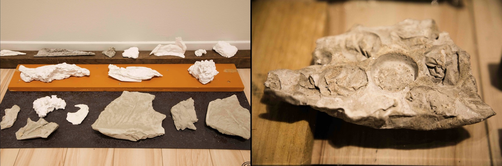
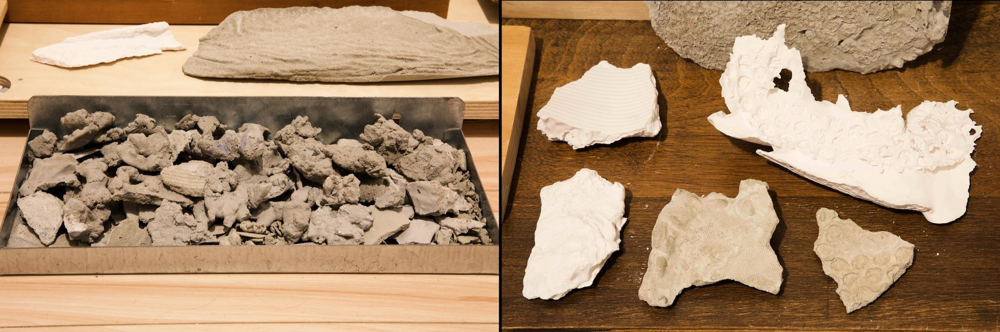